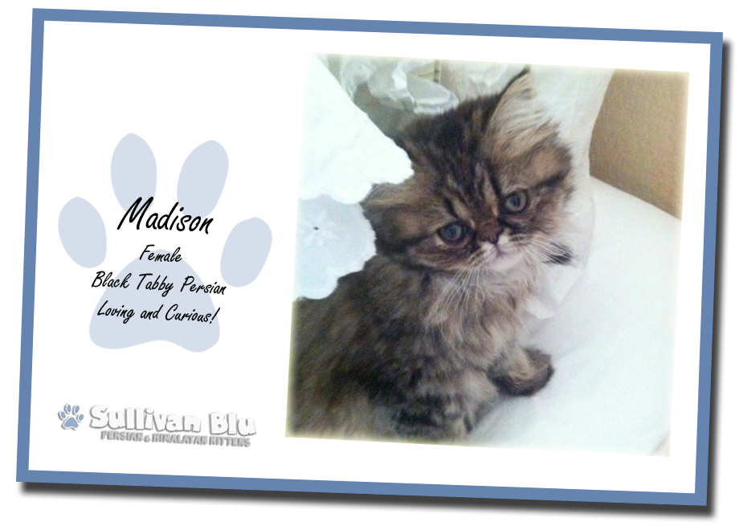
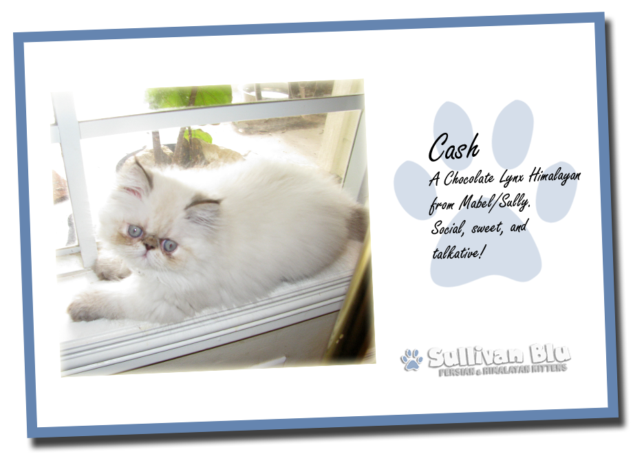
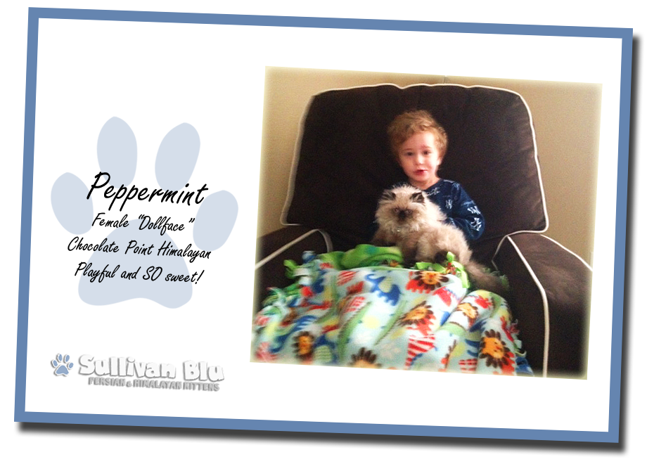
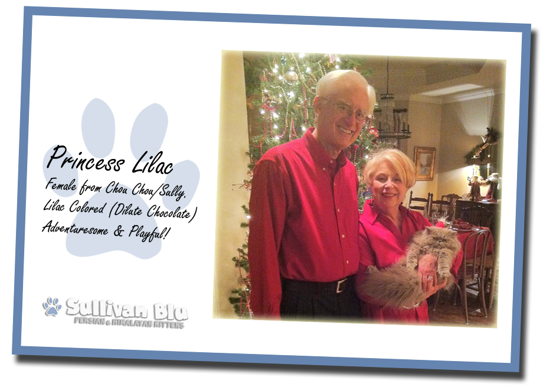
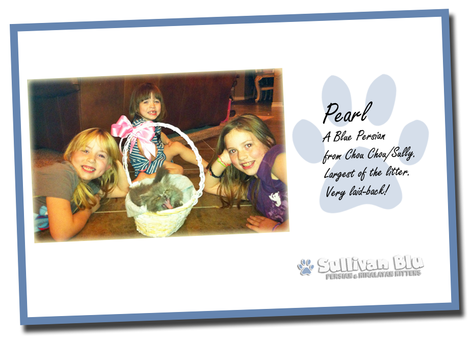
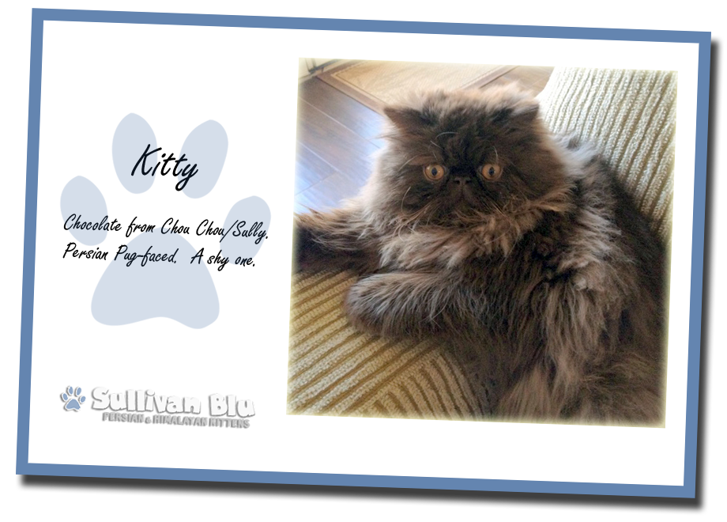
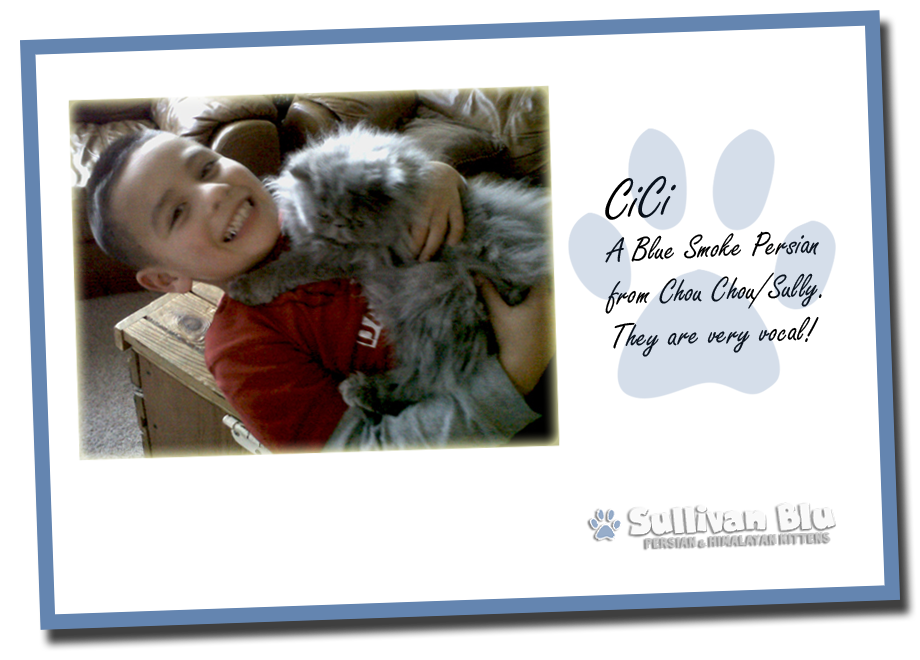
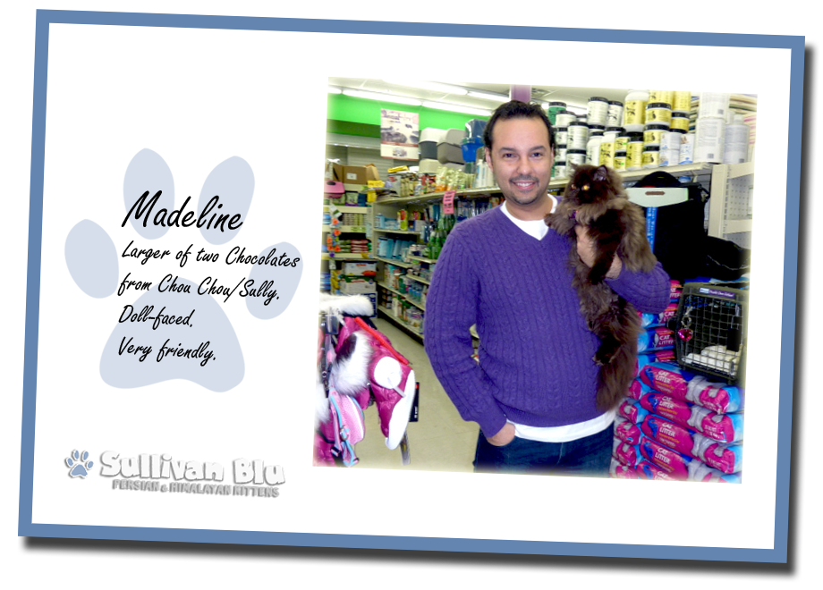
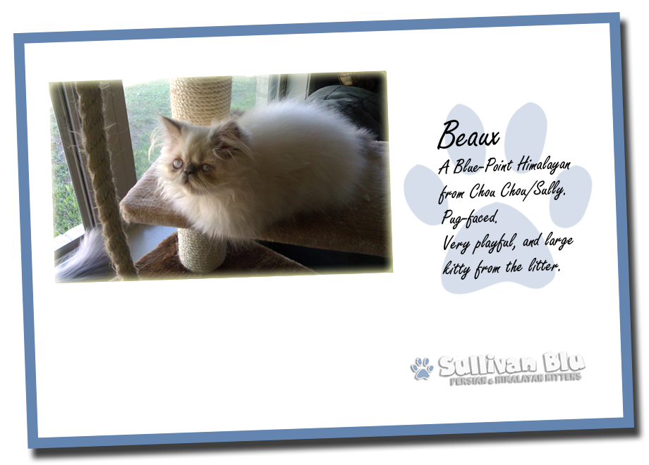

Jenny,
Our little Madison is adjusting nicely! She has decided to wander around the house and explore. She loves the stairs- running up and down, hiding at the top so we can come and 'get her'. Also a new favorite thing to do is get a running start in the master bedroom and leap into her straw basket that I gave her. It used to hold my knitting and needlepoint but she decided it was 'her' basket. She is pure joy and so, so adorable. And of course, she sleeps with us at night, taking position at the top of the pillows so she can keep an eye on us. Donovan is in love with her and she likes him. It's not love, quite yet… I hope Mabel and the others are not too distraught missing her. And thank you again for my beautiful baby. She is a huge ray of sunshine and such fun. I'll continue to send photos and updates. XOXOXO's
-Yvette

Dear Jenny,
Cash (Cashmere Catsby) is the most adorable, funny, adventurous, loving cat I have ever known. After losing my precious Max, I felt like there was a hole in my heart that would never mend. Then Cash came into our lives. He sleeps on my pillow, follows me around every step I take when he is awake, gives me sweet little kitty kisses and purrs constantly. He loves playing with our 8 month old granddaughter. He is so good with her. He is the most social, well-adjusted little guy around. We fall more and more in love with him every day. Thank you so much for letting him become a part of our family. Anyone who gets a kitten hand raised by you in your loving home is a lucky person indeed.
-Susan & Harold

Hi!
Just wanted you to know we are loving little Peppermint! She is super sweet and not really phased by much of anything. Peppermint puts up with all snuggling and "forceful" cuddling. :) We are trying to teach him that sometimes she doesn't want to be held...but he loves her! She is great! She loves feathers and chases balls. She seems to be getting comfortable and follows us everywhere!
-Jane
Hi there!
Kevin is enjoying his new life in Colorado. He has such a funny personality and is always entertaining, but also has a sweet side that loves to snuggle up next to us on the couch. He has fit right in with our other cat and even our 100 lb. Lab, who we often find sitting right next to him or napping with him in the sun! Kev is a great eater, growing daily, and his unique coloring and soft fur make him truly one of a kind!
-Erica & Alan

Hi Jennifer,
Princess Lilac loves being the center of attention! She's very affectionate, has an appetite, & very playful. A real joy. She loves our grandchildren & people in general. She looks just like her daddy. We adore her!
-Carol & Roger

Jennifer -
Pearl is doing great! She is just so stinking cute. Last night I was sitting at the counter in the bathroom and she started her talking thing that she does. She is the most vocal cat I have ever seen! She does a funny little growl thing. I don't know how to explain the sound. You said her dad is the same way, so maybe you know the sound I'm talking about. Anyway, last night she jumped up beside me and started talking and pawing at me, like " talk to me. Pet me. Pay attention to ME!". She cracks me up! She is getting so big too.
-Felicia

Hello Jenny,
Her new name is officially “Kitty”. She is an awesome cat! Her
temperament is so docile and laid back, she loves being around people
and will just come and join when I have friends and family over. I
haven’t had any problems with scratching or anything she is usually
content to lay on the couch all day and relax! She definitely has an
appetite, this cat loves her food! Just had her neutered a few weeks
back and she recouped perfectly! Kitty has been a great addition to the
family! I also wanted to thank you for your follow up and help whenever
I have had a question!! It’s great to see how much you care for your
kittens!
Thanks again!
-Tom

Hi Jennifer,
We did name her CiCi and she is wonderful! She can be very outgoing and playful, but mostly she likes to just lounge around us or on us. She is funny with my son because she loves to sleep on his bed with him and when he is gone she seems to be looking for him and waiting for him to come home. She is sometimes like a dog my mom says because she knows the sound of my car when I come home from work. It doesn't matter what she is doing at the time but as soon as she hears my car she jumps up and runs straight for the door and waits for me to come in. She is very vocal though, she loves to just meow and if you talk back to her she responds with her sweet soft meows. She is very silly and loves to sleep on her back with her limbs all spread out. She is great for our family and I thank you for letting her be a part of it.
-Tabitha & Jeremiah

Dear Jennifer,
In regards of my loved MADELINE, she is doing great. She grew some in size but she is not big, I would say she is small-petite which is even better at least for me or my preference. Her fur is thick and nice, and she is very calm when bath time is. She has beautiful fur color shades: deep ash, dark brown, copper and beige around her neck and chest. She does not shed much. Her temperament...she likes to be petted but not much, and most definitely, she is an independent woman.. ha ha ha! She loves to watch TV with me by 9pm "Judge Judy" is our favorite show... LOL !!!
-Oswaldo( Ozzy )

Jennifer,
Beaux is doing great! He walked into his new home like he had been there all his life. I knew on the ride home when Terri let him out of the carrier, and he got up on the console between us and rode there just about the whole trip home, that he was going to be a cool cat. Him and Tag (the dog) get along great. He took over Tag’s water bowl, I think just to antagonize him, but it didn’t work...Tag just ignores him!
Sincerely,
-Dub